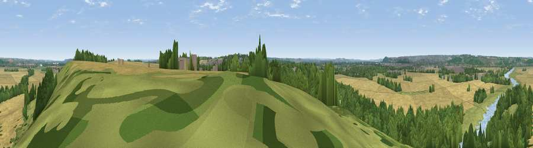

Viewpoint near Stoke Bardolph
#35980 in England · top 59% of its area beats it · near Stoke BardolphWhere it is
The exact computed spot (SK 65225 40775). Click the marker for map links.
The view, rendered

A 360° render of this exact spot computed from the terrain model, tree cover and land cover — summer colours, afternoon light, calibrated against photographs of famous viewpoints. Real trees, hedges and buildings will differ in detail.
The panorama
Grey silhouette: terrain skyline in each direction (720 bearings, Earth curvature and refraction included). Dashed green: skyline with trees (+15 m) and buildings (+8 m) as obstacles. Blue strip: how far the ground is visible on each bearing.
Where the view opens
Wedge length = distance to the farthest visible ground on that bearing (vegetation-aware). Rings at 10, 25 and 50 km.
What fills the view
39% cropland · 34% woodland · 16% grassland · 6% water · 4% built-up
Angular shares of the visible panorama (visual magnitude), not map area. Landscape diversity 0.59 (0–1 Shannon).
Key numbers
More beautiful places nearby
The staircase of upgrades: each row has a higher view potential than everything closer. Driving times are estimates from straight-line distance, calibrated against real road routing — check an actual route before setting out.
| Place | Direction | Drive | Score |
|---|---|---|---|
| Viewpoint near Burton Joyce | N · 4 km | ~9 min | 39.2 |
| South Viewing Platform | NW · 5 km | ~10 min | 50.3 |
| North Viewing Platform | NW · 5 km | ~10 min | 50.6 |
| Old Hill | NE · 7 km | ~14 min | 52.1 |
| Viewpoint near Kneeton | NE · 7 km | ~15 min | 61.2 |
| Viewpoint near Arnold | NW · 9 km | ~17 min | 64.1 |
| Viewpoint near Stathern | SE · 16 km | ~28 min | 66.3 |
| Viewpoint near Stathern | SE · 16 km | ~28 min | 67.2 |
52.96039, -1.03045 · source: screening · position refined by local search. Computed location — check access rights before visiting.